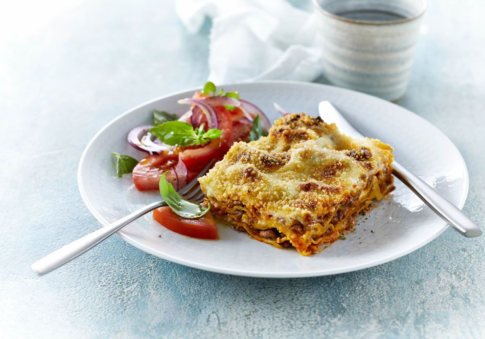

Lasagna

Ingredienser
- Smør 25g
- Hakket oksekød
- Groft salt
- Tørret timian
- Tørret oregano
- Lasagne plader
- Mornaysauce
- Rasp
Sådan gør du
Bagetid
Ca. 35 min. ved 200° - traditionel ovn.
Kødsauce
Lad smørret blive gyldent i en gryde. Brun kød og løg til kødet smuldrer og skifter farve.
Tilsæt krydderier, tomatpuré og bouillon og lad saucen koge ved svag varme og under låg i ca. 10 min.
Mornaysauce
Smelt smørret i en tykbundet gryde. Tilsæt mel og bag det godt sammen.
Kom halvdelen af mælken i under omrøring. Bring saucen i kog og tilsæt resten af mælken lidt efter lidt.
Kom krydderier og ost i. Lad saucen koge godt igennem til osten er smeltet. Smag til.
Læg lagvis, i et smurt ovnfast fad: kødsauce, lasagneplader og mornaysauce – det øverste lag skal være mornaysauce.
Drys med rasp og fordel smørklatter på toppen. Bag lasagnen midt i ovnen til overfladen er gylden. Lad lasagnen hvile tildækket på køkkenbordet i ca. 10 min.